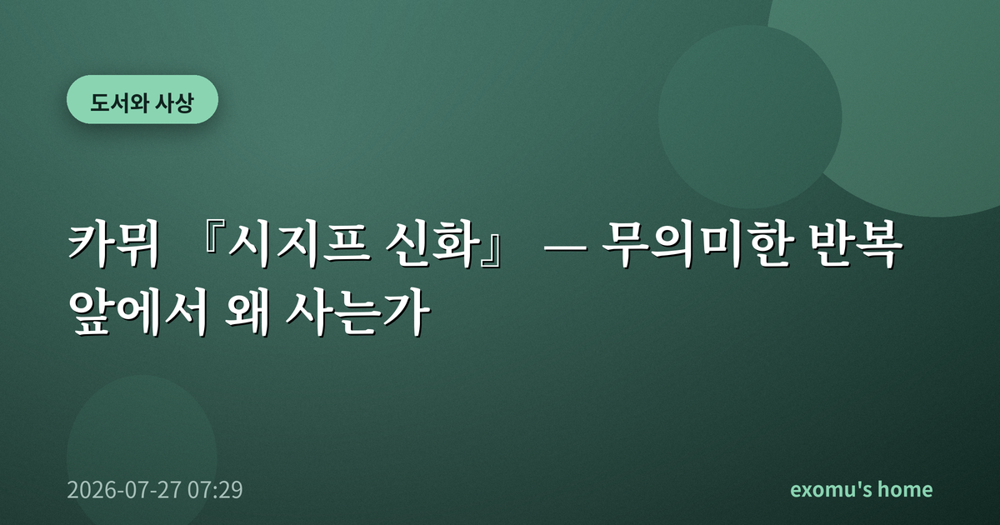
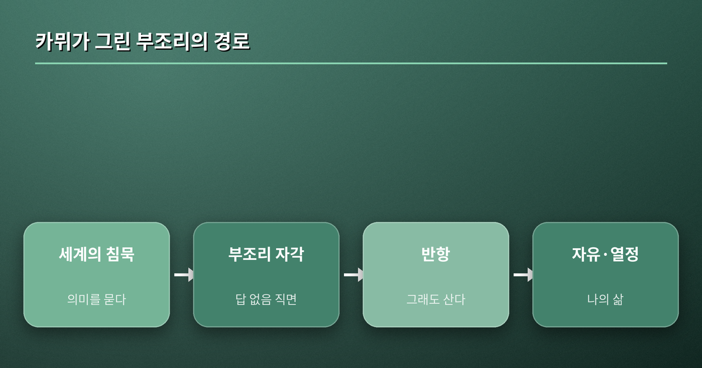
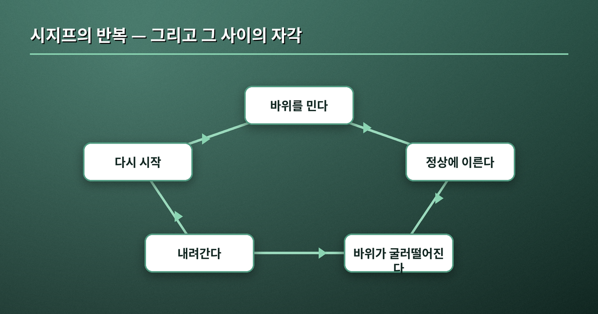
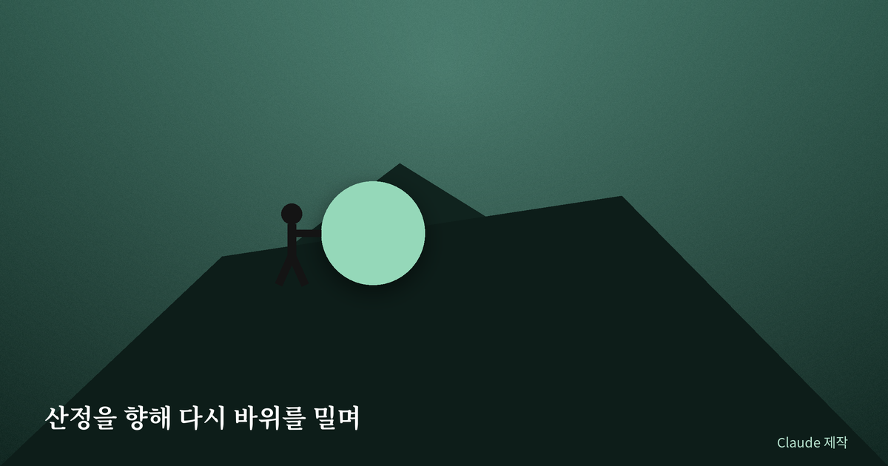

카뮈 『시지프 신화』 — 무의미한 반복 앞에서 왜 사는가

월요일 아침, 나는 다시 같은 책상 앞에 앉는다. 지난주에 끝낸 일이 이번 주에 비슷한 얼굴로 돌아와 있고, 나는 또 그것을 밀어 올린다. 문득 이 반복에 무슨 의미가 있나 싶은 순간, 오래전 읽었던 알베르 카뮈의 『시지프 신화』가 떠올랐다. 신들에게 벌을 받아 영원히 바위를 산으로 밀어 올리는 사내. 카뮈는 왜 하필 이 무의미한 형벌을 붙들고 자유를 이야기했을까.
부조리란 무엇인가
카뮈가 말하는 '부조리'는 세계가 원래 잔인하다는 뜻이 아니다. 그것은 의미를 갈망하는 인간과, 그 갈망에 아무 대답도 하지 않는 침묵하는 세계 사이의 어긋남이다. 우리는 삶이 왜 이런지, 무엇을 위한 것인지 끊임없이 묻지만 세계는 응답하지 않는다. 이 마주침, 즉 이유를 요구하는 마음과 이유를 주지 않는 우주 사이의 간극이 바로 부조리다. 시지프의 바위는 그 부조리의 완벽한 상징이다. 끝없이 반복되지만 아무 데도 다다르지 않는 노동.
흥미로운 것은 부조리가 세계에도, 인간에도 따로 있지 않다는 점이다. 그것은 오직 둘이 만나는 자리에서만 생겨난다. 세계가 조금 더 친절했거나 인간이 의미를 향한 갈망을 접었다면 부조리는 없었을 것이다. 그러나 우리는 묻기를 멈추지 못하고, 세계는 답하기를 거부한다. 카뮈는 이 팽팽한 긴장을 억지로 해소하려 들지 말라고 말한다. 어느 한쪽으로 도망쳐 긴장을 없애는 순간, 우리는 삶의 진실 하나를 눈감아 버리는 것이기 때문이다.

카뮈의 대답 — 반항, 그래도 산다
부조리를 자각한 사람 앞에는 흔히 두 개의 탈출구가 놓인다. 하나는 삶을 스스로 끝내는 것, 다른 하나는 종교나 이념 같은 초월적 의미에 몸을 던져 부조리를 없던 일로 만드는 것이다. 카뮈는 둘 다 거부한다. 대신 그는 '반항'을 택한다. 세계에 의미가 없음을 똑똑히 알면서도 눈을 감지 않고, 그 사실을 회피하지도 않은 채, 그럼에도 계속 살아가는 태도다. 의미의 부재를 인정하는 것과 삶을 포기하는 것은 전혀 다른 일이라는 것, 이것이 그의 핵심이다.
여기서 오해하기 쉬운 대목을 짚어둘 필요가 있다. 카뮈의 반항은 세상을 향한 분노나 냉소가 아니다. 그것은 오히려 삶을 향한 뜨거운 애착에 가깝다. 답이 주어지지 않는 세계라 해서 삶의 밀도가 줄어드는 것은 아니다. 오히려 미리 정해진 의미가 없기에, 지금 이 순간의 감각과 경험은 더 절실해진다. 카뮈가 반항과 함께 '자유'와 '열정'을 나란히 놓은 이유가 여기에 있다. 내일이 보장되지 않기에 오늘을 최대한으로 살아내려는 태도, 그것이 부조리에 대한 가장 인간다운 응답이다.

산에서 내려오는 순간 — 사상의 곁불
카뮈가 주목하는 대목은 시지프가 바위를 밀어 올리는 장면이 아니라, 바위가 굴러떨어진 뒤 그가 다시 산을 내려오는 그 짧은 순간이다. 그 내려오는 길에서 시지프는 자신의 운명을 또렷이 의식한다. 바로 그 의식이 형벌을 자유로 바꾼다. 자신의 운명을 알고, 그것을 부정하지 않으며 끌어안는 순간, 운명은 더 이상 그를 짓누르는 외부의 힘이 아니라 그가 감당하는 자신의 것이 된다. 여기에는 자신의 삶을 스스로 긍정하라던 니체의 목소리와, 반복 속에서 오히려 새로움을 발견하려던 사유의 곁불이 함께 어른거린다.

나의 바위
카뮈는 "산정을 향한 투쟁 그 자체가 인간의 마음을 채우기에 충분하다"는 취지의 말로 글을 맺으며, 우리는 시지프가 행복하다고 상상해야 한다고 적는다. 나는 이 문장을 오래 곱씹는다. 내 월요일의 반복이 무의미하게 느껴질 때, 문제는 반복 자체가 아니라 그 반복을 내가 어떤 눈으로 보느냐일지도 모른다. 바위는 사라지지 않는다. 다만 나는 그것을 남의 벌로 미느냐, 나의 삶으로 미느냐를 고를 수 있다. 오늘도 나는 내 바위 앞에 선다. 조금은 다른 마음으로.
